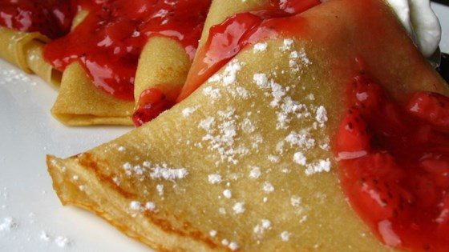

Crêpe Recipie

Ingredients
- 1 cup all purpose flour
- 2 eggs
- 1/2 cup of milk
- 1/2 cup of water
- 1/4 teaspoon of salt
- 2 tablespoons of melted butter
Directions
- In a large mixing bowl, whisk together the flour and eggs.
- Gradually add in the milk and water
- Stir to combine
- Add the salt and butter
- Beat mixture until smooth
- Heat a lightly oiled griddle or frying pan over medium-high heat
- Pour or scoop around 1/4 cup of batter onto the gridle
- Tilt the pan with a circular motion so the batter coats the surface of the pan evenly
- Cook the crêpe for about 2 minutes or until the bottom is light brown
- Loosen with a spatula
- Turn and cook on the other side